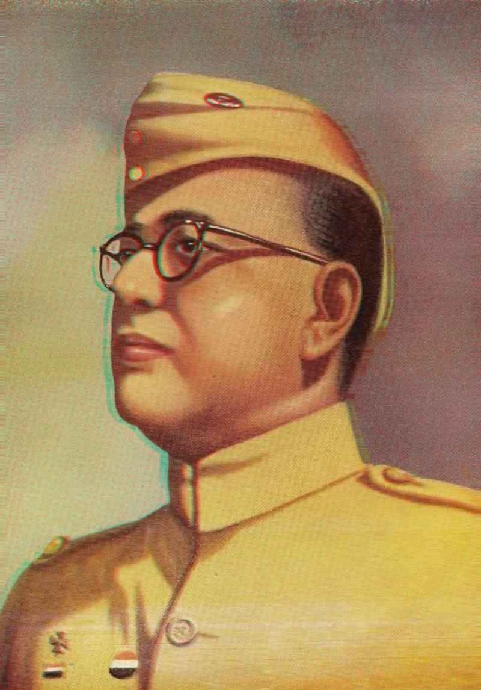

NETAJI
|  |
| Full Name |
Subash Chandra Bose |
| Date of Birth |
January 23, 1897 |
| Place of Birth |
Cuttack, Orissa, British India |
| Role in Independence Movement |
Leader and Freedom Fighter |
|
Subash Chandra Bose is considered the most influential freedom fighter with extraordinary leadership skills and a charismatic orator. His famous slogans are 'tum mujhe khoon do, main tumhe aazadi dunga', 'Jai Hind', and 'Delhi Chalo'. He formed Azad Hind Fauj and made several contributions to India's freedom struggle. He is known for his militant approach that he used to gain independence and for his socialist policies.Netaji Subhas Chandra Bose was born on 23 January, 1897 in Cuttack (Orissa) to Prabhavati Dutt Bose and Janakinath Bose. His father was a successful lawyer in Cuttack and received the title of "Rai Bahadur". He did his schooling at the Protestant European School (presently Stewart High School) in Cuttack, just like his siblings. He did baccalaureate from the Presidency College. He was influenced by the teachings of Swami Vivekananda and Ramakrishna after reading their works at the age of 16. He then was sent by his parents to the University of Cambridge in England to prepare for the Indian Civil Service. In 1920 he passed the civil service examination, but in April 1921, after hearing of the nationalist turmoils in India, he resigned his candidacy and hurried back to India.